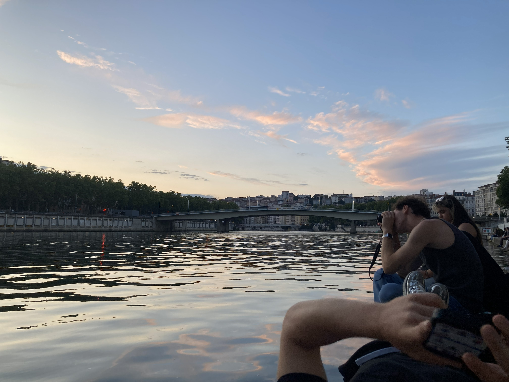

Rolling to Portugal
Breaking hearts friendships and milage PRs
Creating 12 day journey plan is not the easiest task. Get all the recipes and invoices, find place to stay, find connections, find activities, choose people and mind
everyones personal needs while planning. I juggled with most of the tasks, it won't be the most comfortable but as I say travelling shouldn't be anywhere near the comfort. This is the positive thing about
being in charge. You choose the pace, then you just need to push others to march as fast as you.